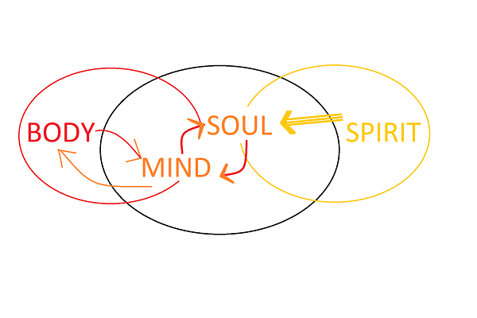

In the world with more than 7 billion people, we are all distinct. But my thoughts of late tend to wonder on what really makes up the human being is it the fleshy vessel that we physically interact with or is the more to it. Well, of course, the is more than meets the eye just wanted to make my juicy introduction, but seriously what are the components of the human being. So there are many extensive studies and ideologies to this one, I felt I should just throw my own opinion into the mix and also cause am trying to explain something to someone.
DISLAIMER: Not to be quoted, am not taking any scholarly or theological or any credits from this it is just what I think with the influence of much reading, gaming, movies and epiphany moments from deep thought cycles (meditation). The human being consists of four elements which are body, mind, soul and spirit.

Body
The thing we physically interact with this is not that hard to explain. The body is the carrier of all things and our general interface to the world providing locomotion and protection, and you also have to simply think of the 5 senses namely touch, smell, sight, taste and hearing attached to it. If you are fortunate enough to have all of these you experience the world optimally per se. These senses can get one into trouble but with these, we have a way to be aware of what around us. Just to note this level is a purely primal basic animal, our general survival instinct comes from the body the need to eat, sleep and procreate. Without control of the body, well and also good care one may not have a pleasurable journey through life, then again heeding too much to basic carnal desires is subjective.
Mind
Purely a quote from high school debate club, “the only thing that separate’s humans from animals are abstract thought”. (if I got it right). The mind plays the most crucial role in coordinating the body and its sense to make sense of it all, it will by any chance give you the best survival odds. While most bodily functions are controlled by the mind automatically such as breathing, rhythmic heartbeat (not so sure) it also plays a major role in how one perceives the world, one’s cognitive ability, general logic. It's one big central processing and storage of all memories. While we can generally put an intelligence quotient IQ on the mind there are quite a lot of variables to consider which affect the way individuals think. Just throwing an example out there, we have five senses but for example, I like certain things because of the way my senses react to them but someone may not like them cause their senses provide a different set of reaction in them. This means at any given time no two persons are having the same experience and therefore no two people can think the same way nor react the same way, fundamentality the entire existence is wildly different when these different variable are compounded also given the fact that no two beings can occupy the same space at the same time, we have differences in opinion, tastes, thoughts, Intelligence. I feel like I can go on and on about the mind but still have to cover other areas, this may warrant a revisit!
Soul
While simply explaining the mind generally throws you into the notion of why people are different at a basic physical interaction level there is still more to it than the mind and body. We generally have all our standards derived or pushed from those measurable factors (well to some extent). Now to leap into the other dimension, the SOUL or what I would like to call the energy cell and basically YOU. The soul defines the absolute centre of a human being and given my belief we are spirits living in a physical world the driver of it all YOU is the SOUL, it is the unifying marker on a being. We all have souls and it is a dimension we know little about given soul space or spiritual space can’t be traversed by any physical device and measure the SOUL exists as an infinite state of power/energy in a higher plane of existence than we can comprehend, though reading the bible can enlighten you quite a lot provided you don’t go in with a physical take to it. Now in soul space, you generally get things like emotions such as love, happiness, joy, anger, envy, greed the whole set. However, it is my general notion that we also feel these things mainly due to the way in which we interact with the world and as with the mind, this differs vastly from being to being. Emotions though as a topic suddenly gives me the idea of a heart space where ultimately our SOUL decides on whether to indulge particular emotions or not (the saying think with your head/mind and not your heart). I realise as I write that while am trying to separate the elements of a human being, they are not separable in any fashion as they work together, but as there is a delicate balance to it all and the SOUL your consciousness is in charge of it all. The soul really makes us who we are it is where our deep most desires and passions are stored and what drives us as human beings in about all our endeavours. Ok so let me jump to the last of my four but now seemingly five elements, I guess that’s why have not been writing much this really taking too long to type… mmm maybe podcast.
Spirit
Now while in the higher dimension of existence just like the body is to mind giving us a way to interact and fell the world the spirit is to mind, now keep in mind the dynamics are not quite the same, it’s a different dimension. Now am no expert in this area but a lot of pastor and prophet talk about being in the spirit, my understanding draws me to believe it’s a space in which the soul can use as a vehicle to interface with the spiritual world and quite honestly this could be dangerous territory. The spirit space is kind like the energy that drives a person’s soul and can either be good or bad, when we pray, though be it in the physical changes happens in the spiritual these changes can be visible to any spiritual beings and the spirit that surrounds your soul provides protection. Now like I said am not particularly going to say much in this area as to how what works or how it can be manipulated and all those things but will say spirit gives us good, Godly Spirit well Holy Spirit and the evil demonic spirits which try to use this space to influence your SOUL in the wrong direction it is my prayer we are all filled with the Holy Spirit so that those evil desires and deeds don’t creep into our souls and then to our mind which controls the body making us a tool for chaos.
I have gone through all elements of a human being quite briefly, I didn’t realise I actually had quite a lot more thoughts actually spinning around on this topic and also in these are not facts, I believe no one really has them on earth well my view anyway. I think would revisit this topic it actually warrants some more research and hopefully open-minded discussions. This is my view on human being and it gives surely give me an "AWE" moment at how there is more than meets the eye to Gods greatest creation.
Drop a comment. [oops]